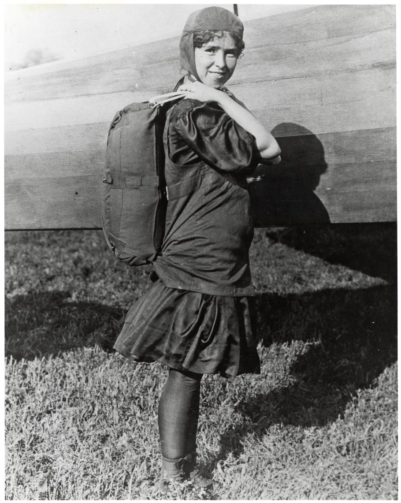

Some Facts about Sky Diving
- A little device "Automatic Activation Device" deploys our parachutes in the worst cases when we can't open out parachute ourselves.
-
You must prove that you've made at least 200 jumps before you can make a Wingsuit Jump.
- It is estimated that during the time of a free fall, the wind that travels past your ear is over 100 mph. This means that you are deaf to most sounds that you might want to hear during a free fall.
- It is estimated that well over 2 million skydives takes place every year. Also, it is important to note that out of these skydives; the fatalities average around 35 which can be worked out to less than 1% of all the jumps that occur during the year.
-
In the year 2006, around 400 divers from as many as 31 countries took just about 80 seconds
to form a flower arrangement in the sky. This feat was accomplished at a height of a little
over 23,000 ft.
- Fred Mack, at the age of 100 years, was the oldest person to skydive. He promised he would do it after completing a century, and he stayed true to his word. He truly serves as a massive inspiration.
- Toni Stadler from the country of South Africa was the youngest person to skydive at the age of four. He accomplished this feat from an altitude of 10,000 feet.
- Michael Zang created a new world record by completing 500 jumps in a single day. He completed this in intervals of less than 3 minutes.
-
Georgina Broadwick, in 1913, was the first woman to jump with the aid of a parachute from
an aircraft. This feat was accomplished over Los Angeles. It is fitting that she performed
such a daredevil act over the ‘City of Angels’. Why should men have all the fun?
 -
After flying to an altitude of more than 128,000 feet (39,000 meters) in a helium-filled balloon,
Red Bull Stratos pilot Felix Baumgartner completed a record breaking skydive on October 14, 2012 from
the edge of space. During his 4:20 freefall, Felix reached a maximum speed of 833mph (1,342.8 km/h),
which set a new world record as the first human in history to break the sound barrier with his body!
Mach 1.24... in a spacesuit!

OFFICIAL VIDEO LINK OF THIS WORLD RECORD